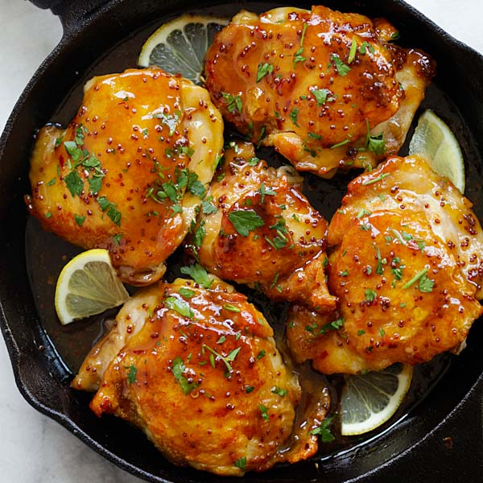

Honey Glazed Chicken

Description
Honey glazed chicken is a flavorful and sweet chicken dish that is perfect for any occasion. The dish consists of tender and juicy chicken that is coated in a sweet honey glaze, which gives it a deliciously sticky and caramelized texture. The honey glaze is typically made with a combination of honey, soy sauce, garlic, and other seasonings, which combine to create a savory and sweet taste that is sure to impress any dinner guest.
Honey glazed chicken is a versatile dish that can be served in many different ways, making it a great option for weeknight dinners or special occasions. It can be baked, grilled, or cooked on the stovetop, and is often served with sides like rice, vegetables, or a salad. The sweetness of the honey glaze pairs perfectly with the savory flavors of the chicken, creating a well-balanced and delicious meal that is sure to be a hit with everyone at the table.
Ingredients
- 4-6 boneless,skinless chicken breasts
- 1/2 cup honey
- 1/4 cup soy sauce
- 3 cloves garlic,minced
- 1 tablespoon olive oil
- 1 tablespoon apple cider vinegar
- 1/2 teaspoon dried oregano
- Salt and pepper to tate
How to Prepare
- Preheat the oven to 375F(190C).
- In a small bowl, whisk together the honey, soy sauce, garlic, olive oil, apple cider vinegar, dried oregano, salt, and black pepper to make the honey glaze.
- Place the chicken breasts in a baking dish or skillet, and pour the honey glaze over them, making sure they are coated evenly.
- Bake in the preheated oven for 25-30 minutes, or until the chicken is cooked through and the internal temperature reaches 165F(74C).
- Every 10 minutes, brush the chicken with the honey glaze from the bottom of the baking dish or skillet to create a sticky, caramelized exterior.
- Remove the chicken from the oven and let it rest for 5 minutes before slicing and serving.
- Serve hot, garnished with chopped fresh herbs or sesame seeds, if desired.